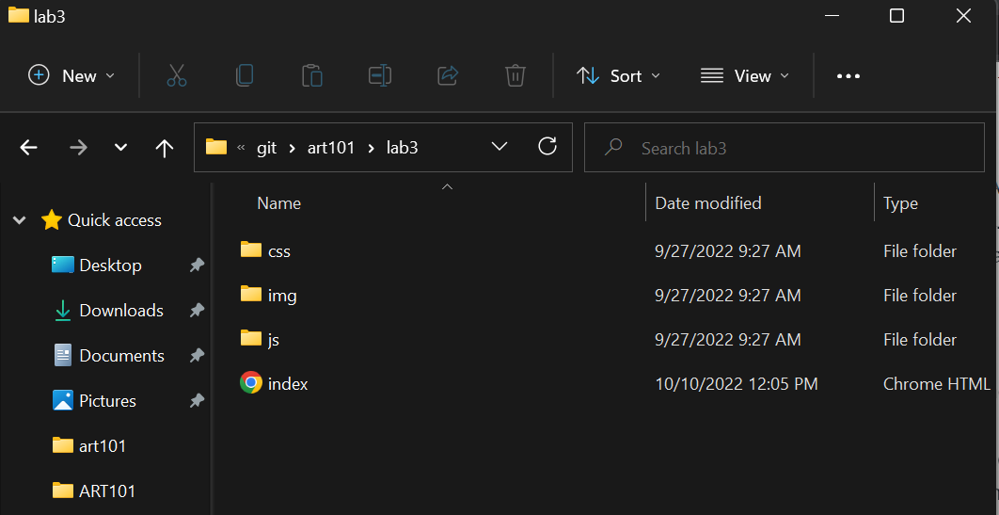
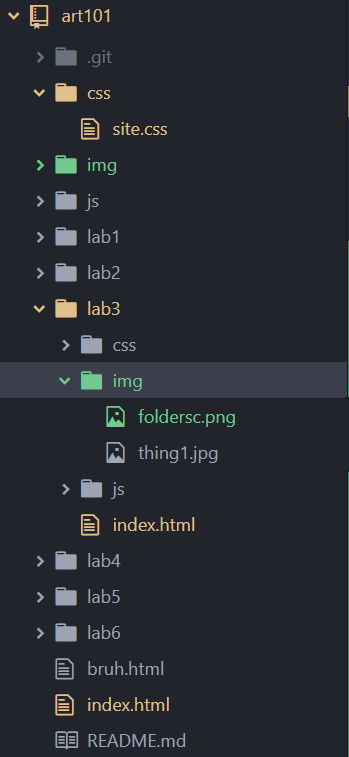

This lab focused on creating a local file structure as well as adding and editing index.html files
All steps were easy, since all I had to do was edit the existing index.html files within the art101 project folder. What I did struggle on was formating my pages cleanly and neatly in a way that looked visually appealing and organized.
Here are some screenshots of the file structures of the index.html files in my folder directory (left) and in Atom (right).
 